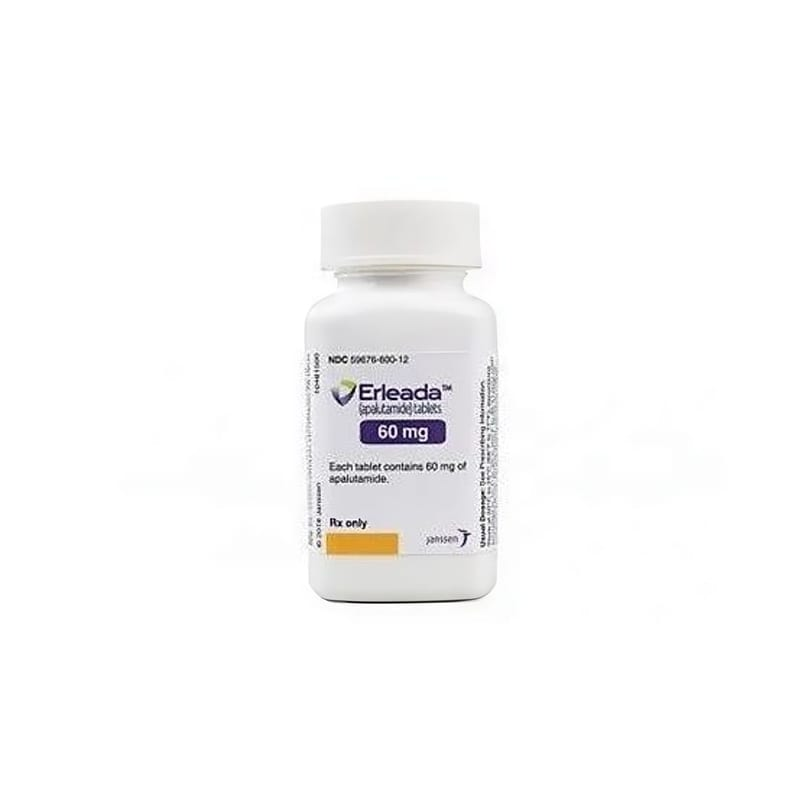

Erleada 60 mg Film Kaplı Tablet, 120 Adet

Ne için kullanılır
KT · Bölüm 1- ERLEADA, etkin madde olarak apalutamitiçermektedir. - ERLEADA androjen adı verilen hormonların (testosteron gibi) aktivitesini engelleyerek etkisini gösterir. Apalutamit, androjenleri engelleyerek prostat kanseri hücrelerinin çoğalıp bölünmesini durdurur. - ERLEADA, yetişkin erkeklerde
• Vücudun diğer yerlerine yayılmamış, testosteron seviyesini düşüren tıbbi ya da cerrahi tedaviye artık yanıt vermeyen prostat kanserini (diğer adıyla kastrasyona dirençli prostat kanseri) tedavi etmek için ECOG performans statüsü 0-1, yüksek metastatik hastalık riski taşıyan (PSA ikiye katlanma zamanı ≤ 10 ay, N0-1 ve PSA düzeyi 2 ng/dl üzerinde olan hastalar) non-metastatik kastrasyona dirençli prostat kanserli (nmKDPK) yetişkin erkeklerin tedavisinde, • Vücudun diğer yerlerine yayılmış, testosteron seviyesini düşüren tıbbi veya cerrahi tedaviye hala yanıt veren prostat kanserini (diğer adıyla hormon sensitif prostat karsinomu) tedavi etmek için visseral metastazı olmayan hormon sensitif metastatik prostat karsinomlu (mHDPK) yetişkin erkeklerin tedavisinde androjen deprivasyon tedavisiyle (ADT) kombine kullanımı halinde endikedir. - ERLEADA film kaplı tabletler açık sarımsı ila grimsiyeşil renkli, bir yüzünde AR 60 baskılı, oblong şeklindedir. - ERLEADAfilm kaplı tabletler plastik kapaklı plastik şişelerde ve her şişe 120 tablet içerecek şekilde sunulmuştur.